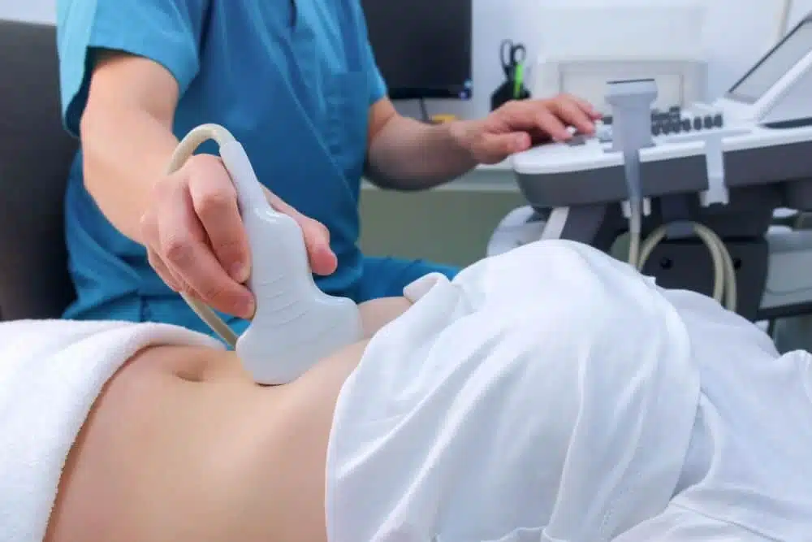
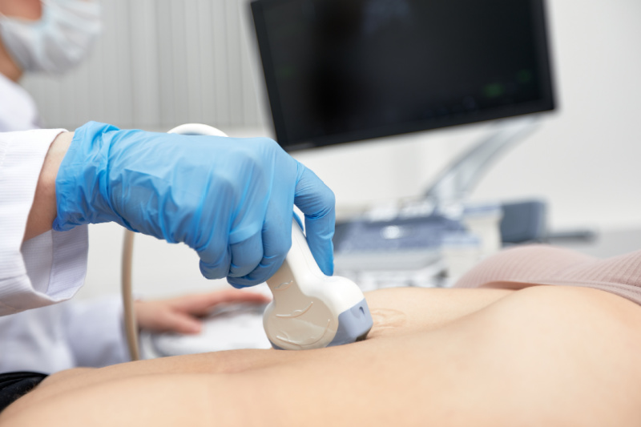
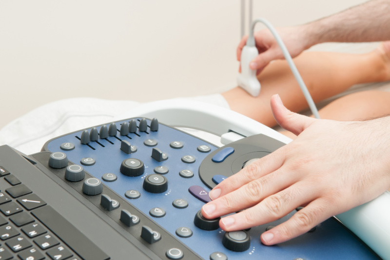

.png)

.png)

Diagnostic Ultrasound Scans
Private diagnostic Ultrasound scans at our Birmingham Clinic in Kings Norton

Follow Us On


 0121 392 3112
0121 392 3112

English

Private diagnostic Ultrasound scans at our Birmingham Clinic in Kings Norton

Universal Ultrasound diagnostics offers private Ultrasound scans in Birmingham, UK. We use the latest Ultrasound systems to deliver excellent imaging confidently for both our private clients and referring practitioners. Our latest machines coupled with highly skilled staff deliver the highest quality performance.

ACCREDITED & TRUSTED


An abdominal Ultrasound checks the upper abdominal organs and is also used to assess the abdominal wall and appendix. We use high-frequency Ultrasound to look at the liver, aorta, gallbladder, pancreas, spleen and kidneys and bladder as well as the muscles and soft tissues of the abdominal wall. A focused scan of the right lower abdomen can identify appendicitis or an inflamed appendix. The scan also detects abdominal wall hernias or lumps.
Reasons for having this scan
What to expect




This scan is designed to measure the size of the abdominal aorta and check for aneurysms or narrowing. An abdominal aortic aneurysm is a swelling of the aorta; Ultrasound is the first-line test to detect or monitor it. Our scan assesses the aorta and the common iliac arteries.
Why book an aorta scan?
Your appointment
An Ultrasound of the breast uses sound waves to create detailed images of the breast tissue. You can choose to have the armpit/axilla scanned as well. It can detect masses, lumps, cysts or tumors, and is particularly useful in people with dense breast tissue or those under 25 where mammograms are less effective. Men may also develop breast lumps or gynecomastia; Ultrasound is an excellent way to evaluate male breast symptoms.
Common reasons for a breast scan
What happens at the scan




Pain, swelling or a lump in the calf can affect your daily life. A targeted musculoskeletal Ultrasound looks at the calf muscles, tendons, Achilles tendon and soft tissues. It can show tears, strains, fluid build-up or inflammation and can rule out more serious problems such as blood clots.
What this scan assesses
Scan details
An abdominal Ultrasound checks the upper abdominal organs and is also used to assess the abdominal wall and appendix. We use high-frequency Ultrasound to look at the liver, aorta, gallbladder, pancreas, spleen and kidneys and bladder as well as the muscles and soft tissues of the abdominal wall. A focused scan of the right lower abdomen can identify appendicitis or an inflamed appendix. The scan also detects abdominal wall hernias or lumps.
Reasons for having this scan
What to expect


Pain, swelling or a lump in the calf can affect your daily life. A targeted musculoskeletal Ultrasound looks at the calf muscles, tendons, Achilles tendon and soft tissues. It can show tears, strains, fluid build-up or inflammation and can rule out more serious problems such as blood clots.
What this scan assesses
Scan details
A Pelvic Caesarean-Section Scar Ultrasound Scan can assess the uterus, ovaries, and endometrium and the healing of a caesarean-section scar. The scan is particularly useful for assessing the postoperative healing process and detecting abnormalities such as uterine scar defects or myometrial thinning. It measures the scar's length, depth and width, while specifically assessing the residual Myometrial Thickness (RMT), which helps assess risks in future pregnancies, like uterine rupture. We measure scar thickness and look for defects or niches in the lower uterine segment. The anterior abdominal wall at the surgical site is also evaluated for complications such as infection, haematoma or hernia.
Monitoring the scar can provide reassurance for women planning future pregnancies or experiencing post-operative pain.
The scan can be performed using transabdominal or both transabdominal and transvaginal techniques, depending on your clinical indications or symptoms. No GP referral is required.
Obstetrics single
Early Pregnancy scan
£45.00
Viability/reassurance scan
£45.00
Gender scan
£45.00
Dating scan
£75.00
Growth and Foetal Well-Being
£80.00
Growth & Placenta Localisation
£100.00
Cervical Length
£95.00
Mid T/20 Week
£100.00
Obstetrics Multiples
Dvt - deep vein thrombosis
Diagnostics
We accept Visa Debit, Credit Cards, Cash, Bank Transfer, Master Cards and Western Provident Association (WPA) Health Insurance. Full payment is required upon appointment booking. If you pre-book your appointment and do not wish to make a full payment at the time of booking, a non-refundable deposit of £30 is required. Cancellations made over 48 hours in advance receive a 50% refund. Refunds are processed in 7 to 10 working days. No refund for same-day cancellations, missed appointments or cancellations within 48 hours. You can reschedule your appointment once, at any time. If we cancel your appointment due to any unforeseen circumstances, we will contact you to reschedule your appointment within 24 hours, or we will offer a full refund.
.png)
Universal Ultrasound Diagnostics offers an online booking system for easy appointment scheduling. There are options for walk-ins depending on availability.
.png)
We provide chaperones and interpreting services and allow family members or friends during scans; however, children are not allowed in the room for certain scans. Please check your appointment confirmation email for clarity on our safety policy.

Our FAQ page addresses many common questions about your scan.
.png)
Our facility is accessible by public transport. There is parking around The Green or Pay & Display at the side of The Bulls Head Pub, which charges £1 per hour (cash and card accepted).

Opening Times
Monday to Sunday
8 am - 11 pm
Location
10c The Green, Kings Norton, Birmingham, B38 8SD
.png)
Please fill in the form and our team will get back to you to confirm your appointment.
Quick Response
Providing private Ultrasound scans with compassion, advanced technology and expert care. Your health is our priority.
.png)

Follow Us


Find Us
10c The Green, Kings Norton, Birmingham, B38 8SD

0121 392 3112

Scans
Diagnostic Scans
Paediatric Scans
Pregnancy Scans
Fertility Scans

Legal
Complaints Procedure
Terms and Conditions
Clinical Safety Policy
Equality and Diversity Policy
Modern Slavery Policy
Digital Products Refund Policy
and Terms and Conditions
Company Number 14186755
.png)
Help Us Improve
Leave a Review on Yell
Leave a Review on Google My Business
Leave a Review on Facebook
A feedback form will be included in your appointment emails and we would welcome your feedback.
© 2026 Universal Ultrasound Group. All Rights Reserved.
Sitemap
Privacy Policy
.png)